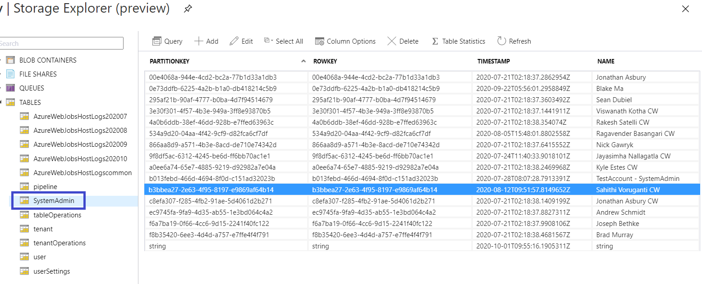
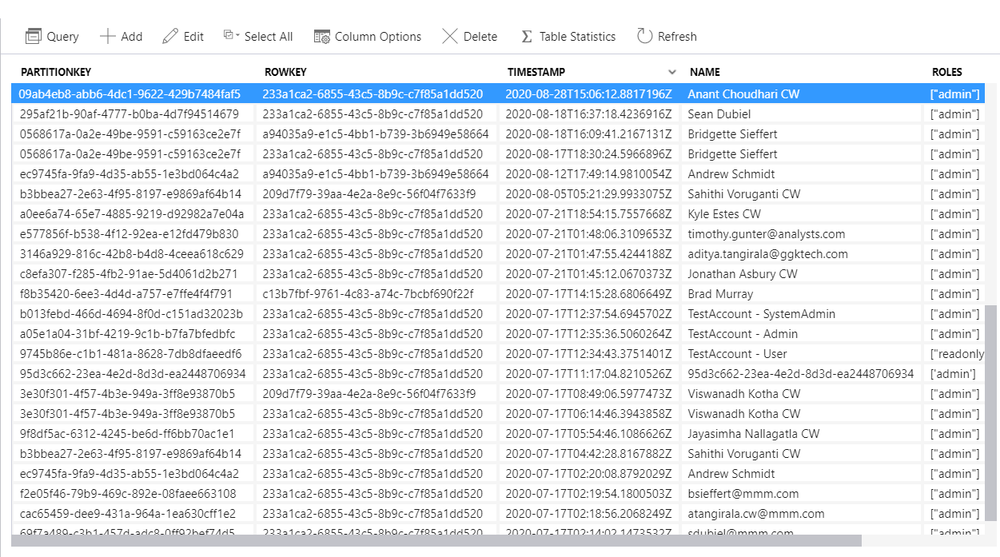
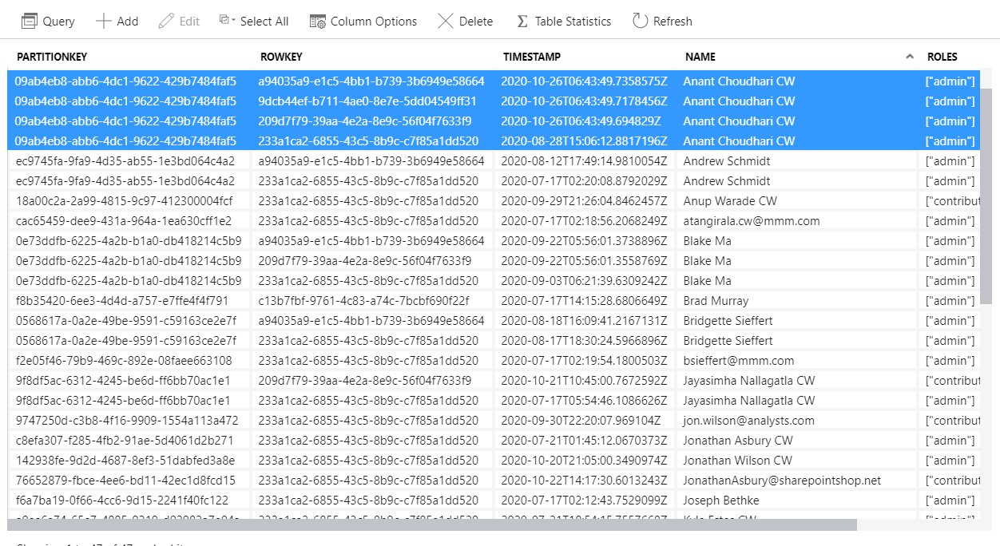
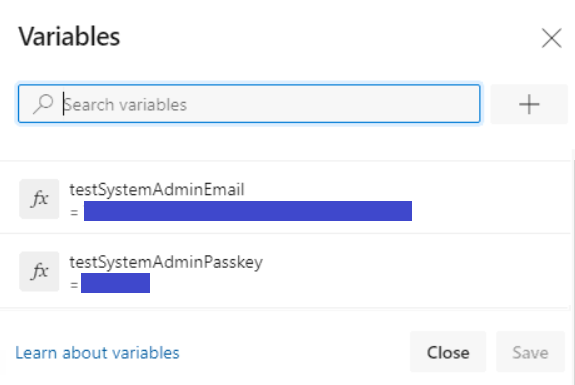
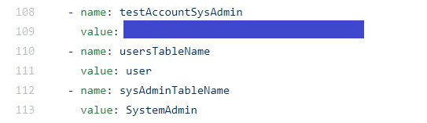
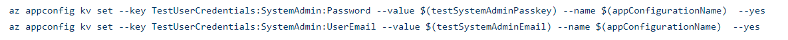
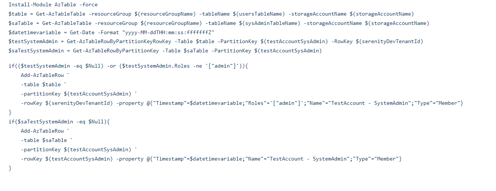

Add System Admin User
System admin is the user who has access across all the tenants. A System Admin can be added to a Serenity Instance using either of the following techniques:
Web Application
An existing user can be made as SystemAdmin to the System from Web Application. Refere the steps here for adding an existing user as SystemAdmin through Web Application.
Note: The user has to be a Non-SystemAdmin user to be added as a SystemAdmin to the system
Once a user is made SystemAdmin, the following happens:
- A row is added for this user in SystemAdmin Azure Storage table with below details:
- PartitionKey: UserID
- RowKey: UserID
- Timestamp: Datetime when the User is made SystemAdmin
- Name: Name of the user
Ex: 
- The selected user will be added as a user to the rest of the tenants with Admin role which means, a record is added in User table with below details:
For each of the remaining available active tenants a record is inserted with- PartitionKey: UserID
- RowKey: TenantID
- Timestamp: Datetime when the User is made SystemAdmin
- Name: Name of the user
- Roles: Admin
- Type: Member
Example:
User table record before making the user as SystemAdmin:

User table record after making the user as SystemAdmin: 
Pipeline
During the system deployment a Default tenant is added to the system and a user is configured as a SystemAdmin to this tenant. As this happens during the deployment, this is a one-time assignment. Below are the details on how a SystemAdmin can be added through pipelines
Configure credentials
The user credentials for SystemAdmin user are configured in the pipeline variables. Below are the details configured:
- Email Address
- Password

YAML file
Below are the details on how SystemAdmin is added through pipeline:
- Define variables
- UserId: Generate and assign a dedicated UserID in the variables section
- User table: User storage table name
- SystemAdmin table: SystemAdmin storage table name 
- Add TestAccount details to App Configuration(Optional)
SystemAdmin EmailID and password from pipeline variables can be added to App Configuration for future use. Below are the App Config keys currently used:- TestUserCredentials:SystemAdmin:UserEmail
- TestUserCredentials:SystemAdmin:Password

- Verify and add Test Account in the User Table
The user is added in below tables:- User
- SystemAdmin 